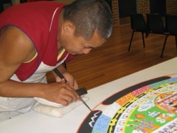

Tibetan monk working on the sand mandala, October 2011
I heard that the Gyuto Monks of Tibet were visiting Bondi again this year, for a week or so in spring. I really wanted to attend one of their meditations and see the sand mandala they were making . Given my work schedule of late, finding the time was not easy, but earlier this month I finally found the opportunity to head down to Bondi Beach Public School to see the Gyuto monks before their visit to Bondi ended.
I was so glad that I found some time to get there…
The sand mandala was simply awesome. I’m sure there is a lot going on in the art of the mandala that I have no knowledge of (I.E. the symbolism and visual representations etc), but you can’t help being in awe of the amazing fine detail in the work, the glorious colours and the incredible patience that the monks demonstrate as they contribute to this work-in-progress.
It was easy to spend a long time looking at the sand mandala and watching the monks create it; this is a meditation in itself. But once the mandala is completed, it is dismantled – a reminder of the impermanence of life.

Fine detail seen in the sand mandala - using the zoom
I was able to stay for only some of the meditation, but even so, the benefit of stopping and listening and focusing for that short while was big, for me. Hopefully the monks will be back again next year and I’ll be making sure that my schedule allows me to spend more time in their presence in 2012 than I did this year.
 Categories:
Categories: